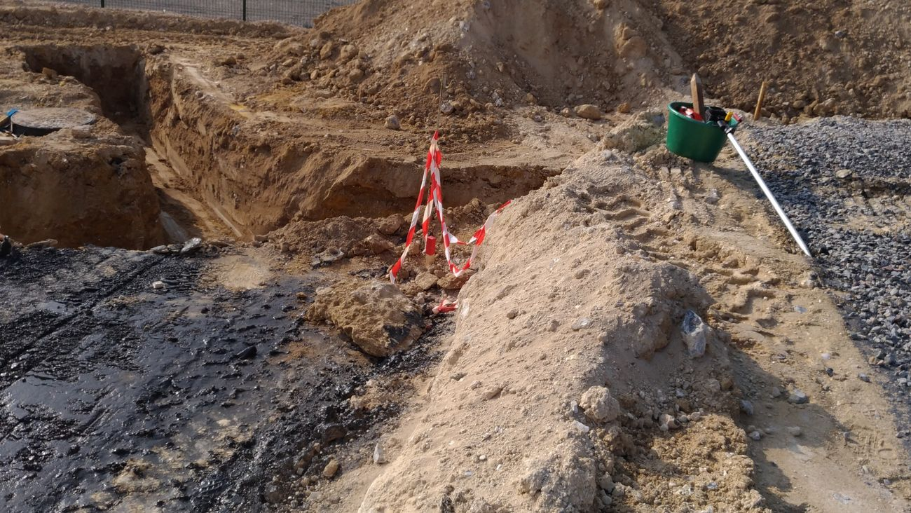
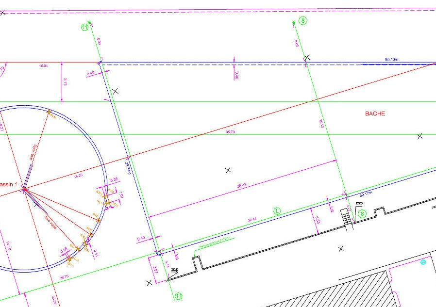

Reporter le projet sur le terrain
Implanter, c'est transformer des coordonnées en points matériels : piquets, chaises, clous, traits de peinture, que le maçon retrouvera le lendemain matin.
Nous partons du plan du maître d'œuvre et des limites de propriété, puis nous calculons les points à implanter dans le même système que le levé. Sur place, la station totale ou le GNSS reporte ces points avec une précision centimétrique.
Sont implantés, selon le chantier : les angles du bâtiment, les axes de fondation, les niveaux de plancher, les axes de voirie et les tracés de réseaux.
Chaque implantation s'accompagne d'un procès-verbal d'implantation indiquant ce qui a été matérialisé, à quelle date, et à partir de quelles références.
Sur le chantier

Le plan d'implantation
Avant d'aller sur le terrain, tout se prépare au bureau. Le plan d'implantation est la pièce qui fait le lien entre le projet et la mesure.
Il porte les points à implanter, leurs coordonnées, les distances et angles depuis les stations, les cotes de rattachement aux limites et aux ouvrages existants, et les altitudes de référence.
C'est aussi le document de contrôle : après exécution, il permet de vérifier que l'ouvrage réalisé correspond à ce qui était prévu — et, en cas d'écart, de le mesurer précisément plutôt que de le discuter.

Le contrôle et le récolement
Implanter ne suffit pas : encore faut-il vérifier que ce qui a été construit correspond à ce qui a été implanté.
Le contrôle en cours de travaux intervient aux étapes irréversibles : après terrassement, après coulage des fondations, au niveau du plancher bas. C'est le moment où une erreur se corrige encore.
Le récolement, en fin de chantier, relève l'ouvrage tel qu'il a été réalisé. Il sert à la réception, aux dossiers d'ouvrages exécutés, et à la déclaration attestant l'achèvement des travaux.
Un écart constaté et mesuré à temps coûte infiniment moins cher qu'un écart découvert à la vente.
Les questions qu'on nous pose
À quel moment faut-il nous appeler ?
Avant le terrassement, et si possible dès que le permis est obtenu. L'implantation se prépare au bureau : il faut le plan de masse, le plan de niveaux, et l'analyse des limites. Appelés le matin du coulage, nous ne pouvons plus que constater.
Le maçon ne peut-il pas implanter lui-même ?
Il peut tracer, et il le fait couramment. Mais il ne peut pas engager sa responsabilité sur la position de la limite de propriété ni sur le respect des règles d'implantation. C'est précisément ce que couvre l'intervention d'un géomètre-expert, qui est assuré pour cela.
Les repères tiennent-ils pendant le chantier ?
Les chaises sont installées hors de l'emprise des engins, mais un chantier reste un chantier. Nous prévoyons des repères de report en périphérie, qui permettent de reconstituer les axes si les chaises sont détruites. Une reprise d'implantation reste possible à tout moment.
Implantez-vous aussi les piscines et les murs ?
Oui : piscines, murs de clôture et de soutènement, abris, extensions, ouvrages enterrés. Ce sont souvent ces ouvrages secondaires qui posent problème, parce qu'ils se rapprochent des limites plus que le bâtiment principal.
Un ouvrage à implanter ?
Le cabinet intervient à Mantes-la-Jolie, à Limay et dans toute la vallée de la Seine. Transmettez-nous le plan de masse et le plan de niveaux : nous vous dirons ce qu'il faut implanter et à quel moment intervenir.